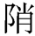

汉初善言治道，亦擅文章者，先有陆贾[123]佐高祖，每称说《诗》《书》；高帝命著书言秦所以失天下及古今成败，每奏一篇，帝未尝不称善，名其书曰《新语》；今存。文帝时则有颍川贾山，尝借秦为喻，言治乱之道，名曰《至言》[124]；其后每上书，言多激切，善指事意，然不见用。所言今多亡失，惟《至言》见于《汉书》本传。
贾谊[125]，雒阳人，尝从秦博士张苍受《春秋左氏传》[126]。年十八，以能诵《诗》《书》属文称于郡中，廷尉吴公[127]荐于文帝，召为博士，时年二十余，而善于答诏令，诸生莫能及。文帝悦之，一岁中超迁至大中大夫，且拟以任公卿。绛灌冯敬[128]等毁之曰：“雒阳之人年少初学，专欲擅权，纷乱诸事。”于是帝亦疏之，不用其议；后以谊为长沙王[129]太傅。谊既以谪去，意不自得，及渡湘水，为赋吊屈原，亦以自谕也：
“恭承嘉惠兮俟罪长沙，侧闻屈原兮自湛汨罗。造托湘流兮敬吊先生，遭世罔极兮乃殒厥身。呜呼哀哉兮逢时不祥，鸾凤伏窜兮鸱枭翱翔。茸尊显兮谗谀得志，贤圣逆兮方正倒植。……吁嗟默默，生之无故兮。斡弃周鼎，宝康瓠兮。腾驾罢牛，骖蹇驴兮。骥垂两耳，服盐车兮。章甫荐履，渐不可久兮。嗟苦先生，独离此咎兮。讯曰：已矣，国其莫我知兮，独壹郁其谁语。凤漂漂其高逝兮，夫固自引而远去。袭九渊之神龙兮，沕深潜以自珍；偭獭以隐处兮，夫岂从虾与蛭螾。所贵圣人之神德兮，远浊世而自藏；使骐骥可得系而羁兮，岂云异夫犬羊。般纷纷其离此尤兮，亦夫子之故也；历九州而相其君兮，何必怀此都也！凤凰翔于千仞兮，览德辉而下之；见细德之险征兮，遥曾击而去之。彼寻常之污渎兮，岂能容夫吞舟之巨鱼；横江湖之鳣鲸兮，固将制于蝼蚁。”
三年，有鸮飞入谊舍，止于坐隅。长沙卑湿，谊自惧不寿，因作《服赋》以自广，服者，楚人之谓鸮也。大意谓祸福纠缠，吉凶同域，生不足悦，死不足患，纵躯委命，乃与道俱，见服细故，无足疑虑。其外死生，顺造化之旨，盖得之于庄生。岁余，文帝征谊，问鬼神之本，自叹为不能及。顷之，拜为帝少子梁怀王太傅[130]。时复封淮南厉王子四人[131]为列侯，谊上疏以谏；又以诸侯王僭拟，地或连数郡，非古之制，乃屡上书陈政事[132]，请稍削之。其治安之策，洋洋至六千言，以为天下“事势，有可为痛哭者一，可为流涕者二，可为长太息者六，若其它背理而伤道者，难遍以疏举”，因历指其失，颇切事情，然不见听。居数年，怀王堕马死，无后；谊自伤为傅无状，哭泣岁余，亦死，年三十三（前二○○至一六八）。
晁错[133]，颍川人，少学申商刑名于轵张恢[134]所，文帝时以文学为太常掌故，被遣从济南伏生受《尚书》，还，因上便宜事，以《书》称说，诏以为太子舍人、门大夫，迁博士，拜太子家令。又以辩得幸太子，太子家号曰智囊。举贤良文学，对策高第，又数上书文帝，言削诸侯事及法令可更定者，帝不听，然奇其材，迁中大夫。景帝即位，以为内史，言事辄听，始宠幸倾九卿，法令多所更定，袁盎申屠嘉[135]皆弗善之，而错愈贵，迁为御史大夫。又请削诸侯之地，收其枝郡。其说削吴[136]云：
“昔高帝初定天下，昆弟少，诸子弱，大封同姓，故孽子悼惠王王齐七十二城，庶弟元王王楚四十城，兄子王吴五十余城。封三庶孽，分天下半。今吴王前有太子之隙，诈称病不朝，于古法当诛。文帝不忍，因赐几杖，德至厚也。不改过自新，乃益骄恣，公即山铸钱，煮海为盐，诱天下亡人，谋作乱逆。今削之亦反，不削亦反。削之，其反亟，祸小；不削之，其反迟，祸大。”
错请削地之奏，诸贵人皆不敢难，惟窦婴[137]争之，由是与错有隙。诸侯亦先疾其所更法令三十章，于是吴楚七国遂反[138]，以诛错为名；窦婴袁盎又说文帝[139]，令晁错衣朝衣，斩于东市（前一五四年）。
晁贾性行，其初盖颇同，一从伏生传《尚书》，一从张苍受《左氏》。错请削诸侯地，且更定法令；谊亦欲改正朔，易服色[140]；又同被功臣贵幸所谮毁。为文皆疏直激切，尽所欲言；司马迁亦云：“贾生晁错明申商。”[141]惟谊尤有文采，而沉实则稍逊，如其《治安策》，《过秦论》，与晁错之《贤良对策》，《言兵事疏》，《守边劝农疏》，皆为西汉鸿文，沾溉后人，其泽甚远；然以二人之论匈奴者相较，则可见贾生之言，乃颇疏阔，不能与晁错之深识为伦比矣。
惟其后之所以绝异者，盖以文帝守静，故贾生所议，皆不见用，为梁王傅，抑郁而终。晁错则适遭景帝，稍能改革，于是大获宠幸，得行其言，卒召变乱，斩于东市；又夙以刑名著称，遂复来“为人直刻深”[142]之谤。使易地而处，所遇之主不同，则其晚节末路，盖未可知也。但贾谊能文章，平生又坎壈，司马迁哀其不遇，以与屈原同传，遂尤为后世所知闻。
参考书：
《史记》（卷八十四，一百一）
《汉书》（卷四十八，四十九）
《全汉文》（清严可均辑）
《中国大文学史》（第三编第二章）
《支那文学史纲》（第三篇第四章）
注 释
[123] 陆贾 西汉楚（今江苏徐州）人。官大中大夫。以辩才称。高祖、文帝时两次出使南越，劝说南越王尉佗归藩。据《汉书》本传载，他以《诗》、《书》劝高祖以文治天下，说“马上得之，宁可以马上治乎？”高祖不悦，命他撰文论述秦的兴亡和古今得失，遂作《新语》十二篇。《汉书·艺文志》著录“《陆贾》，二十三篇。”系与他的其他著作合计。
[124] 贾山 西汉颍川（今河南禹县）人。曾任颍川侯灌婴骑尉。《汉书·艺文志》著录《贾山》八篇。《至言》，叙论秦王朝灭亡的历史教训，强调帝王应听取臣下劝谏。
[125] 贾谊（前200—前168） 西汉洛阳（今属河南）人。《汉书·艺文志》著录《贾谊》五十八篇，即今传本《贾谊新书》，又称《贾子》。又赋七篇，除《吊屈原赋》、《鸟赋》外，《楚辞》收有《惜誓》，题贾谊作。
[126] 张苍（？—前152） 西汉阳武（今河南原阳）人。秦时御史，汉初封北平侯，后为丞相。《汉书·艺文志》著录《《张苍》十六篇。《春秋左氏传》，即《左传》，相传系春秋时左丘明所作。是一部依据《春秋》记述当时各国史事的编年体史书。叙事起于鲁隐公元年（前722），终于鲁悼公十四年（前454），比《春秋》多出二十七年。《隋书·经籍志》：“《左氏》，汉初出于张苍之家，本无传者。至文帝时，梁太傅贾谊为训诂。”
[127] 吴公 名字失传，西汉上蔡（今属河南）人。曾就学于李斯。他任河南郡守时颇器重贾谊，文帝元年任廷尉后荐谊入朝。
[128] 绛灌 绛指绛侯周勃（？—前169），西汉沛县（今属江苏）人。灌指颍侯灌婴（？—前176），西汉睢阳（今河南商丘）人。二人随刘邦起义，后协力共诛诸吕，迎立文帝。周勃为右丞相，灌婴为太尉。冯敬（？—前142），文帝时任典客、御史大夫。周勃、灌婴、冯敬等毁贾谊事，见《汉书·贾谊传》。
[129] 长沙王 汉初建长沙国，封吴芮为长沙王。贾谊所傅者系第五世长沙王吴产（产，一作著）。
[130] 梁怀王太傅 梁怀王指汉文帝少子刘揖（？—前170）。《汉书·贾谊传》载，贾谊被贬长沙后岁余，文帝召见贾谊。“上因感鬼神事，而问鬼神之本。谊具道所以然之故。”“乃拜谊为梁怀王太傅。怀王，上少子，爱，而好书，故令谊傅之”。
[131] 淮南厉王四子 淮南厉王即文帝庶弟刘长（前198—前174），高祖十一年封淮南王。文帝时因谋叛罪押赴四川，中途不食而死，文帝甚悔，后分封其子安、勃、赐、良四人为列侯。贾谊“知上必将复王之”，将不利于国，上疏谏阻。
[132] 陈政事 《汉书·贾谊传》载，谊曾多次上疏陈述政事，这些疏称为《陈政事疏》，或称《治安策》。以下引文即《治安策》中语。
[133] 晁错（前200—前154） 西汉颍川（今河南禹县）人，历任博士、御史大夫。《汉书·艺文志》著录《晁错》三十一篇。
[134] 张恢 西汉轵县（今河南济源）人。《汉书·袁盎晁错传》载：晁错“学申商刑名于轵张恢生所”。唐颜师古注：“轵县之儒生姓张名恢，错从之受申商法也。”
[135] 袁盎（？—前148） 即爰盎，字丝，西汉楚人，后徙安陵（今陕西咸阳）。文帝时为郎中，后为太常。申屠嘉（？—前155），西汉梁（郡治今河南商丘）人，文帝时为御史大夫，官至丞相。《汉书·袁盎晁错传》载：“错又言宜削诸侯事，及法令可更定者，书凡三十篇。孝文虽不尽听，然奇其材。当是时，太子善错计策，袁盎诸大功臣多不好错。景帝即位，以错为内史。错数请间言事，辄听，幸倾九卿，法令多所更定。丞相申屠嘉心弗便。”
[136] 说削吴 《汉书·荆燕吴传》载：“朝错为太子家令，得幸皇太子，数从容言吴过可削。数上书说之，文帝宽，不忍罚，以此吴王日益横。”及景帝即位，错为御史大夫，上书请削吴。朝错，即晁错；“王天下半”，《汉书·荆燕吴传》及《史记·吴王濞列传》均作“分天下半”。
[137] 窦婴（？—前131） 字王孙，西汉观津（今河北衡水）人。景帝时拜大将军，武帝时为丞相。《汉书·袁盎晁错传》载，晁错为御史大夫，“请诸侯之罪过，削其支郡。奏上，上（令）公卿列侯宗室（杂议），莫敢难，独窦婴争之，由此与错有隙”。
[138] 吴楚七国反 《汉书·景帝本纪》载：前元三年（前154）正月，“吴王濞、胶西王卬、楚王戊、赵王遂、济南王辟光、菑川王贤、胶东王雄渠皆举兵反。大赦天下，遣太尉亚夫、大将军窦婴将兵击之，斩御史大夫晁错以谢七国”。二月，“诸将破七国，斩首十余万级。追斩吴王濞于丹徒。胶西王卬、楚王戊、赵王遂、济南王辟光、菑川王贤、胶东王雄渠皆自杀”。
[139] 文帝 应作“景帝”。
[140] 改正朔，易服色 《汉书·贾谊传》载：“谊以为汉兴二十余年，天下和洽，宜当改正朔，易服色制度，定官名，兴礼乐。乃草具其仪法，色上黄，数用五，为官名悉更，奏之。文帝谦让未皇也。”按秦以十月为岁首，色尚黑。据《汉书·武帝纪》，至太初元年始“以正月为岁首。色上黄”。
[141] “贾生晁错明申商” 语出《史记·太史公自序》：“自曹参荐盖公言黄老，而贾生、晁错明申、商。”申、商，指申不害和商鞅。
[142] “为人 直刻深” 语出《汉书·袁盎晁错传》：“错为人
直刻深” 语出《汉书·袁盎晁错传》：“错为人

直刻深。”